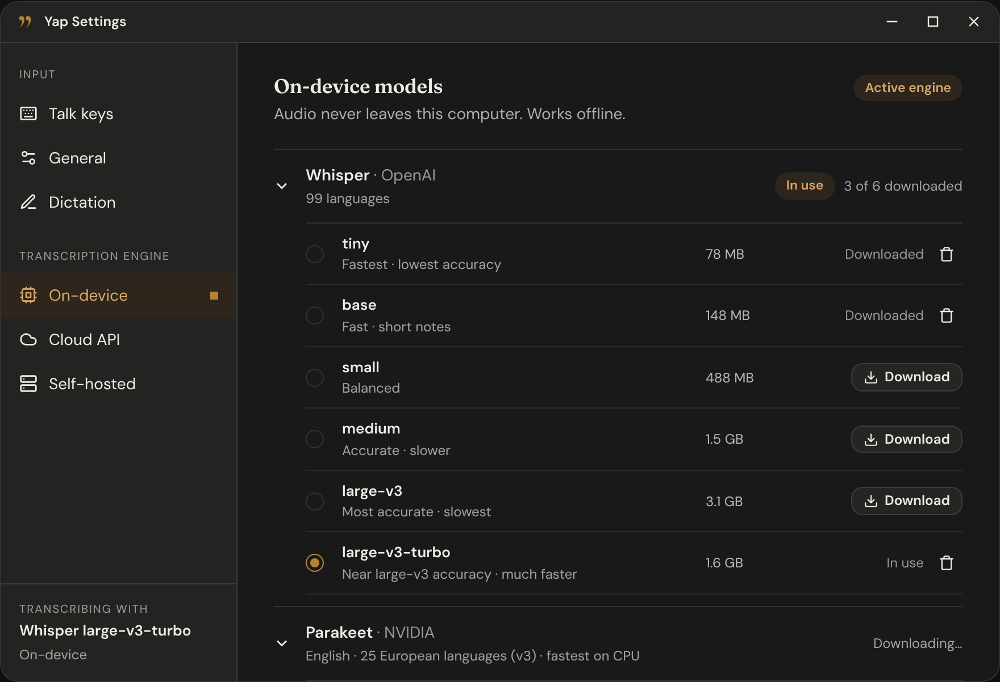
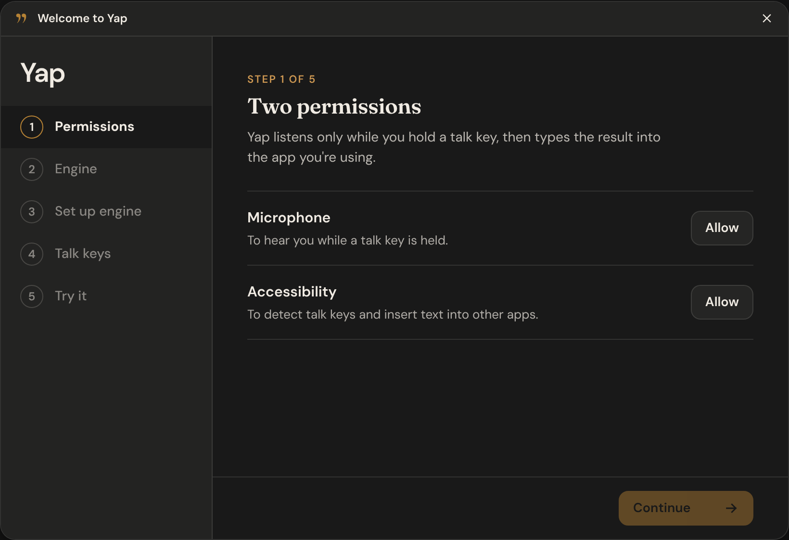
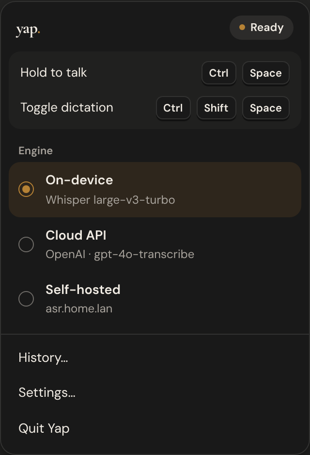
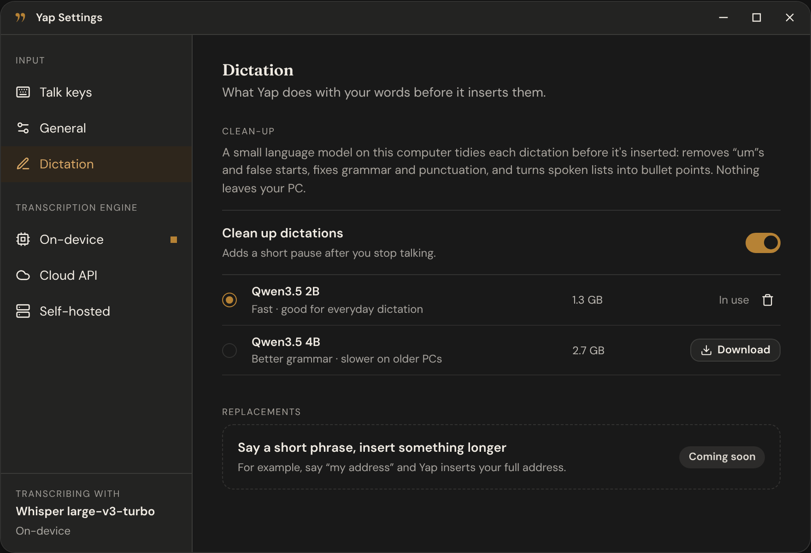
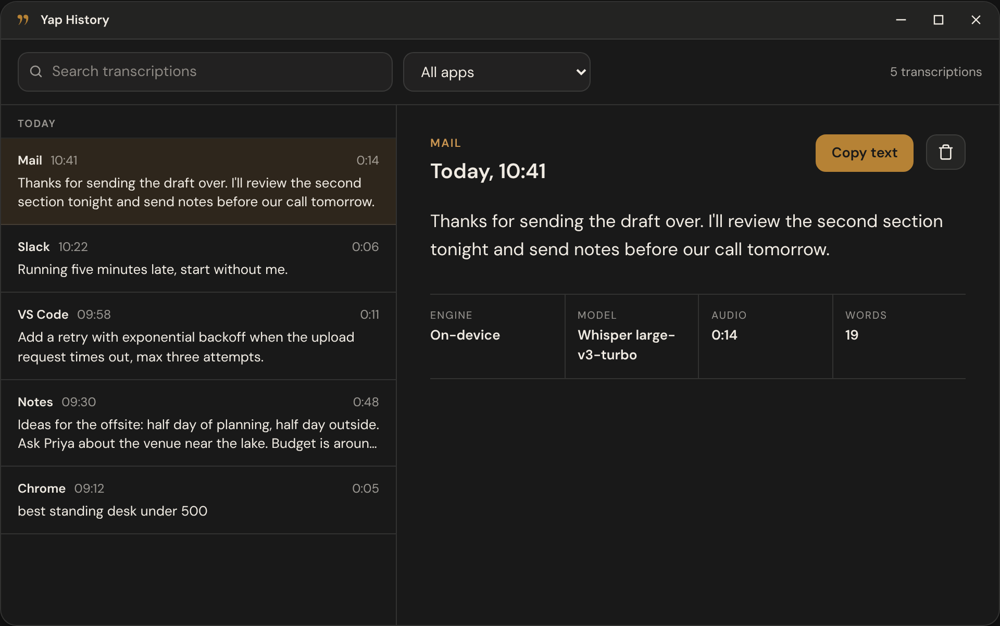

How it works
Three moves, no app to switch to.
-
Hold the keys
A small bar shows at the bottom of your screen so you know Yap is listening.
-
Talk
Say it the way you'd say it. With a streaming model, the words appear while you're still talking.
-
Let go
Yap types what you said where your cursor is. Hit Undo on the overlay if it wasn't what you meant.
Privacy
Your voice is yours.
What you say can be private: messages, notes, work you can't share. So you choose where your audio goes, and by default it goes nowhere.
- No account
- No analytics or telemetry
- Recordings aren't kept
- API keys in your system keychain
-
Default
On your computer
Download a speech model once. After that, no internet needed and nothing gets uploaded.
-
Your own server
Running Whisper on a box at home? Point Yap at it and your audio stays on your network.
-
A cloud provider, if you want one
Use your own API key with OpenAI, Groq, Fireworks AI or any OpenAI-compatible service. Audio only goes there when you've picked it.
Models
From tiny and fast to big and accurate.
Grab one in Settings. Every download is checked against a pinned checksum.
| Model | Download | Good for |
|---|---|---|
| Parakeet TDT 0.6B v3Start here | 487 MB | Fast on most computers, 25 European languages, detects the language on its own. |
| Parakeet TDT 0.6B v2 | 482 MB | English only, really quick. |
| Whisper tiny · base · small | 78 to 488 MB | 99 languages. Smaller is faster, bigger is more accurate. |
| Whisper medium · large-v3 · large-v3-turbo | 1.5 to 3.1 GB | 99 languages, best accuracy. Turbo is nearly as good as large-v3 and a lot faster. |
| Moonshine tiny · base | 30 · 111 MB | English. Light enough for older or low-power laptops. |
| Nemotron Streaming | about 470 MB | Shows your words in the overlay while you're still talking. |
Optional clean-up
A small model on your computer strips out the "um"s and false starts, fixes punctuation and turns spoken lists into bullet points. Choose S1-mini by Superwhisper, Utter or a Qwen3.5 4B fine-tune.
Today's history
Look back at what you dictated today from the tray icon. It stays on your computer and clears itself.

A closer look
Set it up once, then it stays out of the way.



